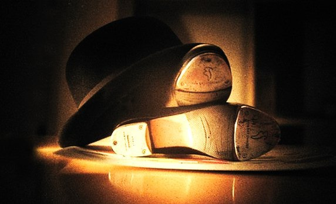
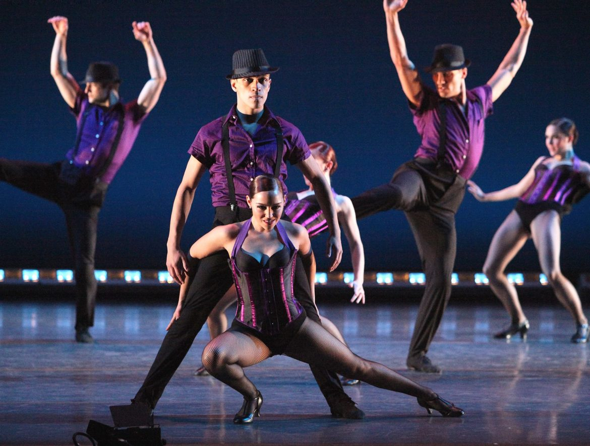

Навигация по сайту |

Что такое степ?
Cтеп — разновидность танца, характерной особенностью которой является ритмическая ударная работа ног. Как правило, чечётка исполняется в специальной обуви, подбитой металлическими пластинами. Основатели жанра Билл Робинсон, Сэмми Дэвис-младший, братья Николас и др.
История возниконовения степа
«Степ» с английского языка переводится как шаг, хотя для танца с этим названием было бы характернее слово «теп» (от английского «стучать). Легенды доносят до нас удивительные истории, где рождение степа связывают то с древнеегипетскими жрецами, которые, поклоняясь богу Ра, исполняли ритуальные танцы на барабанах, ударяя в них ногами, то с африканскими музыкальными и танцевальными традициями, где звук нес определенную информацию. Наиболее популярная версия говорит о том, что степ имеет одновременно как европейские, так и африканские корни, которые переплелись на американском континенте. Степ появился в Америке благодаря смешению многих культур, имеющих сходные танцевальные движения, прежде всего, исходящие из ирландских и африканских традиций. Конец XIX и начало XX века считают временем появления чечетки и постепенным ее распространением по всему миру.
Виды степа
Acro-tap (акро-тэп) Чередованичечеточных комбинаций и акробатических трюков.

Ballet tap, classical tap (балетный тэп, классический тэп) Введение балетных движений в чечеточные ритмы.
Cane tap (тэп-танец с тростью) Трость используется в танце как для создания сценического образа, так и для выстукивания в сочетании с ритмами ног.

Tap dance, tap (тэп-денс) Четкие ритмические рисунки, которые создаются при выстукивании стопой, пяткой и носком.

Базовые знания
Интересные факты о степе
Танец ног имеет несколько названий: «чечетка», «степ», «джига». Знатоки утверждают, что истинные предки степа - ирландская джига и африканские танцы с их характерным синкопированным ритмом, скользящими и шаркающими движениями. Ритмы степа очень музыкальны и весьма заразительны! Услышав их, хочется вскочить и отстучать что-нибудь самостоятельно. А это оказывается непросто. Tapdance достаточно сложен. Даже простые элементы получаются далеко не сразу. Недостаточно сделать движение технически верно. Надо еще сделать его очень быстро и так, чтобы набойки четко отбивали ритм. Чтобы его освоить, потребуется много усилий, но результат приятно вас удивит!